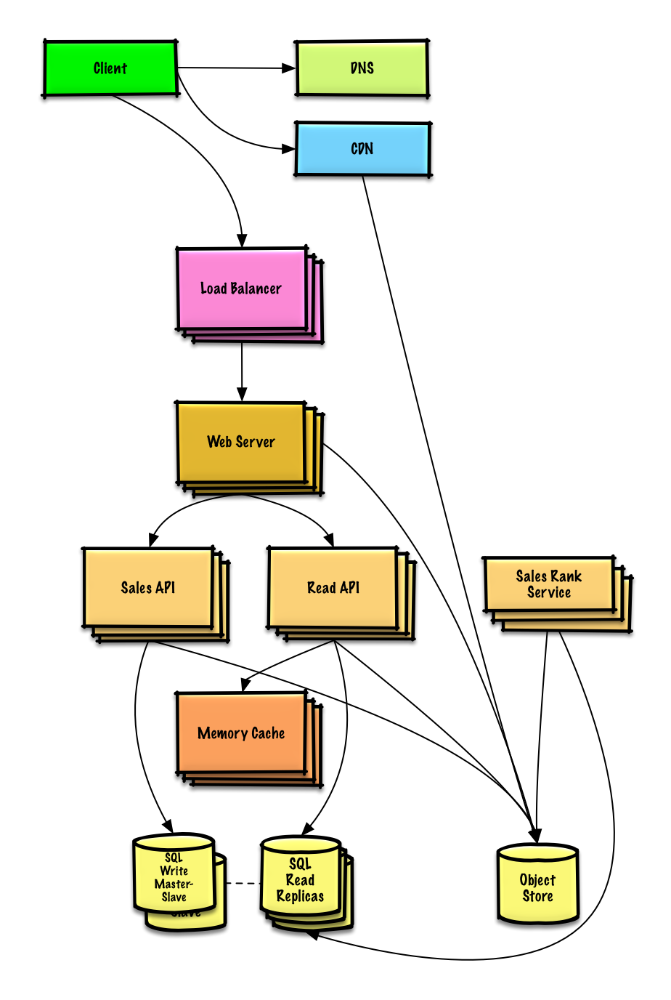
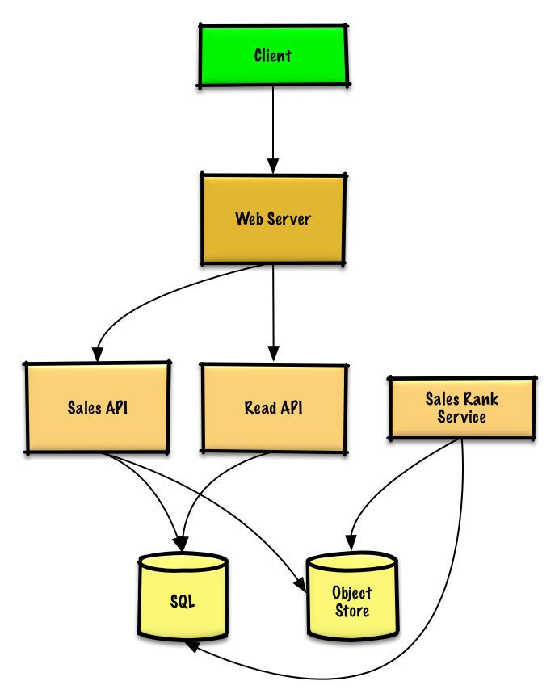

MODULE 14 · SYSTEM DESIGN SOLUTION
Solution to the exercise: "Design Amazon's sales ranking by category feature"
Scoped narrowly on purpose: not the whole e-commerce site, just the pipeline that turns a week of raw transactions into a "most popular products in this category" leaderboard, updated hourly.
Out of scope: the rest of the e-commerce site entirely — just the ranking pipeline.

Raw Sales API log files land in an Object Store (S3-class — no need to build a distributed filesystem for this). A sample log line, tab-delimited:
timestamp product_id category_id qty total_price seller_id buyer_id t1 product1 category1 2 20.00 1 1 t2 product1 category2 2 20.00 2 2 t2 product1 category2 1 10.00 2 3 t3 product2 category1 3 7.00 3 4
A Sales Rank Service runs MapReduce over those logs and writes results into a sales_rank table in SQL.
This is a two-step MapReduce: first collapse to total quantity sold per (category, product), then do a distributed sort so each category's products come out ordered by quantity.
# -*- coding: utf-8 -*-
from mrjob.job import MRJob
class SalesRanker(MRJob):
def within_past_week(self, timestamp):
"""Return True if timestamp is within past week, False otherwise."""
...
def mapper(self, _, line):
"""Parse each log line, extract and transform relevant lines.
Emit key value pairs of the form:
(foo, p1), 2
(bar, p1), 2
(bar, p1), 1
(foo, p2), 3
(bar, p3), 10
(foo, p4), 1
"""
timestamp, product_id, category, quantity = line.split('\t')
if self.within_past_week(timestamp):
yield (category, product_id), quantity
def reducer(self, key, values):
"""Sum values for each key.
(foo, p1), 2
(bar, p1), 3
(foo, p2), 3
(bar, p3), 10
(foo, p4), 1
"""
yield key, sum(values)
def mapper_sort(self, key, value):
"""Construct key to ensure proper sorting.
Transform key and value to the form:
(foo, 2), p1
(bar, 3), p1
(foo, 3), p2
(bar, 10), p3
(foo, 1), p4
The shuffle/sort step of MapReduce will then do a
distributed sort on the keys, resulting in:
(category1, 1), product4
(category1, 2), product1
(category1, 3), product2
(category2, 3), product1
(category2, 7), product3
"""
category, product_id = key
quantity = value
yield (category, quantity), product_id
def reducer_identity(self, key, value):
yield key, value
def steps(self):
"""Run the map and reduce steps."""
return [
self.mr(mapper=self.mapper,
reducer=self.reducer),
self.mr(mapper=self.mapper_sort,
reducer=self.reducer_identity),
]
if __name__ == '__main__':
SalesRanker.run()The distributed sort step is the clever part: by re-keying on (category, quantity) before the second shuffle, MapReduce's own sort-by-key does the ranking work for you — no separate sort pass needed. Result, ready to insert into sales_rank:
(category1, 1), product4 (category1, 2), product1 (category1, 3), product2 (category2, 3), product1 (category2, 7), product3
sales_rank table: id int NOT NULL AUTO_INCREMENT category_id int NOT NULL total_sold int NOT NULL product_id int NOT NULL PRIMARY KEY(id) FOREIGN KEY(category_id) REFERENCES Categories(id) FOREIGN KEY(product_id) REFERENCES Products(id)
Index id, category_id, and product_id to keep lookups fast and in memory (memory reads run ~250μs vs. 4x on SSD, 80x on disk).
Client → Web Server (reverse proxy) → Read API, which just reads straight from the sales_rank table.
$ curl https://amazon.com/api/v1/popular?category_id=1234
→ [{"id":"100","category_id":"1234","total_sold":"100000","product_id":"50"},
{"id":"53","category_id":"1234","total_sold":"90000","product_id":"200"}, ...]

Move the sales_rank rollups toward a dedicated Analytics Database (Redshift/BigQuery-class) and keep only a recent window of raw transaction data in SQL, with the rest in a warehouse or Object Store — 40 GB/month is trivial for S3-class storage. The ~40,000 average reads/sec (much higher for popular categories at peak) is squarely Memory Cache territory — SQL read replicas alone likely can't absorb that volume of cache misses. The write side (~400/sec average) can also get tight for a single write master, which is where Module 07's Federation, Sharding, Denormalization and SQL tuning come back in, alongside considering NoSQL for part of the data.
Next in Module 14: Scaling on AWS. Previous: Query cache.